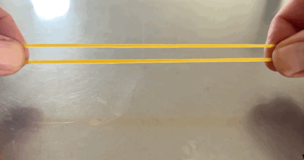
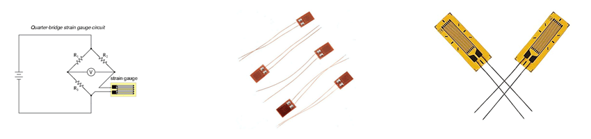

Wheatstone bridge for strain gauges#
Author : Mahdy Albaji
contact : mahdyalbajieng@gmail.com
Layout :#
1- Introduction#
2- Wheatstone Bridge Circuit#
3- Measuring circuits for strain#
4- The Chevron Bridge circuit#
5- Four-Wire Ohm Circuit#
6- Constant Current Circuit#
7- Application & Installation#
8- Shielding#
9- Guarding#
10- Temperature and the Gauge Factor#
11- Conclusion#
12- References#
Introduction#
Before anything, it is necessary to review the concept of strain and how it is measured by a strain gauge. Strain is the relative deformation of a material that occurs when loading and applying stress. Strain is defined and measured according to the initial shape of the material. For example, consider a cache. This cache normally has a specific length.
If we hold two ends of the elastic in our hands and pull it, its length will increase compared to the initial length. This change in length caused by applying force and creating tension in the elastic is called strain. Strain and stress are very important concepts in engineering and material science. The design of mechanical parts and engineering structures is done considering these concepts.

Figure(1):An example of strain
As mentioned earlier, strain is measured by a strain gauge, so here it is necessary to explain what a strain gauge is :
Strain gauge is an electronic sensor that is used to measure strain or relative changes in the length of an object. These devices convert the strain into a change in voltage or current by changing the amount of electrical resistance created in them. These electrical changes can then be measured and analyzed by the electronic system. 
Figure(2):An example of strain gauges
The Wheatstone bridge is a fundamental electrical circuit used to measure unknown resistances by balancing two legs of a bridge circuit. Originally developed by Samuel Hunter Christie in 1833 and later popularized by Samuel Wheatstone, this configuration has found extensive applications in various fields of engineering and metrology. One of its most impactful applications is in the realm of strain measurement, where it plays a critical role in the functioning of strain gauges. When a material deforms under stress, its electrical resistance changes, which can be precisely detected using a Wheatstone bridge setup. By employing strain gauges within the bridge circuit, engineers can accurately monitor and quantify mechanical strain in structures and components, advancing safety, reliability, and performance in design and manufacturing processes. This introduction to the Wheatstone bridge for strain gauge applications highlights its significance and versatility in modern engineering practices.
Due to its high sensitivity, the Wheatstone bridge also measures very small changes in resistance, so the strain gauge can be used as a variable resistance in the Wheatstone bridge.
Power Converter#
A power transducer is a device that converts mechanical forces into measurable electrical signals. These electrical signals can be used to display, record, control or analyze force. And power converters are used in a wide range of applications including industry, medicine, aerospace and research. Power converters include four important parts:
Stress and strain
Strain gauges
Wheatstone bridge circuit
Load cell
In this article, we are going to talk about the strain gauge in the Wheatstone bridge circuit, which is the third part of power converters.
Wheatstone Bridge Circuit#
Wheatstone Bridge Circuit is an electric circuit that consists of four resistors and is used to accurately measure the unknown resistance. Due to its very high and correct sensitivity, it is one of the most common circuits for using strain gauges. An example of a simple Wheatstone bridge circuit is shown in the figure below: If there is no voltage in the circuit, ΔR = 0, all four resistances are equal (R2 = R3R4/R1) and as a result, the output voltage is zero (the bridge is in equilibrium). $\(+out = -out \)\( \)\(Vout = 0\)$ When stress is applied to the strain gauge, its resistance changes by ΔR.
# import the schemdraw lib
import schemdraw
from schemdraw import elements as e
with schemdraw.Drawing() as d:
# add elements
B = e.Battery().up().reverse().label("E")
e.Line().length(2).right().label("+Excitation").dot(open = True)
e.Line().length(1).right().dot(open = True)
d.push()
e.Line().right()
R1 = e.Resistor().down().label("R+ΔR").dot(open = True).label("-out",loc= 'bot')
R2 = e.Resistor().down().label("R")
e.Line().left()
d.pop()
R3 = e.Resistor().down().label("R").dot(open= True).label("+out",loc = 'bot')
R4 = e.Resistor().down().label("R").dot(open = True)
e.Line().length(1).left().dot(open = True)
e.Line().length(2).left()
e.Line().up()
The above circuit is a simple example of Wheatstone bridge. $\(Vout = \frac{R}{R+R}E - \frac{R}{R+ΔR}E\)$
Due to the fact that there is ΔR in both the numerator and the denominator of the above relation, the output of the bridge changes non-linearly with the input force. The value of R is about several hundreds of ohms, while ΔR is usually 0.01 ohm, that is, about 10,000 times smaller. $\(4R >> 2ΔR\)$
The output voltage calculation can be summarized as follows:
It should be remembered that the output voltage (Vout) is differential and is not considered with respect to the ground, also this voltage is usually very small and is taken from a source with an output impedance of R/2 which is possible It should be around a few hundred ohms or even more.
As a result, this signal must be amplified by a differential circuit and amplified with a very high input impedance.
Measuring circuits for strain#
As said A Wheatstone bridge is a divided bridge circuit used for the measurement of static or dynamic electrical resistance. The output voltage of the Wheatstone bridge circuit is expressed in millivolts output per volt input.
The Wheatstone circuit is also well suited for temperature compensation.
The equation of the Wheatstone bridge, if R1, R2, R3, and R4 are equal, and a voltage, VIN, is applied between points A and C, then the output between points B and D will show no potential difference. However, if R4 is changed to some value which does not equal R1, R2, and R3, the bridge will become unbalanced and a voltage will exist at the output terminals. In a so-called G-bridge configuration, the variable strain sensor has resistance Rg, while the other arms are fixed value resistors.
The sensor, however, can occupy one, two, or four arms of the Wheatstone bridge, depending on the application. The total strain, or output voltage of the circuit (VOUT) is equivalent to the difference between the voltage drop across R1 and R4, or Rg. This can also be written as:
# import schemdraw lib
import schemdraw
from schemdraw import elements as e
with schemdraw.Drawing() as d:
# add elements
d.push()
B = e.Battery().up().reverse().label("Vin")
e.Line().up()
e.Line().right(5).dot().label("C",loc = 'right')
R1 = e.Resistor().label("R1").theta(-140).dot().label("B",loc = 'left')
R2 = e.Resistor().label("R2").theta(-50).dot().label("A",loc ='right')
R3 = e.Resistor().label("R3").theta(40).dot().label("D",loc= 'right')
R4 = e.ResistorIEC().label("R4 or Rg").at(R3.end).to(R1.start)
d.pop()
e.Line().tox(R2.end)
e.Line().toy(R2.end)
The bridge is considered balanced when R1/R2 = Rg/R3 and, therefore, VOUT equals zero. Any small change in the resistance of the sensing strain gauge will throw the bridge out of balance, making it suitable for the detection of strain. When the bridge is set up so that Rg is the only active strain gauge, a small change in Rg will result in an output voltage from the bridge. If the gauge factor is GF, the strain measurement is related to the change in Rg as follows:
that in this regard:
strain = The amount of relative deformation of a material
A change in the value of a Resistor .
The initial value of resistance.
Gauge Factor GF stands for Gauge Factor. It is a measure used in strain gauges and other sensors to indicate the sensitivity of the device. The Gauge Factor is defined as the ratio of relative change in electrical resistance to the mechanical strain experienced by the material. Mathematically, it is expressed as: $\(GF = \frac{(\frac{ΔR}{R})}{ϵ}\)$ where:
ΔR is the change in resistance,R is the original resistance, and ϵ is the mechanical strain. The Gauge Factor is crucial for determining how effectively a sensor can convert mechanical deformation into an electrical signal.
The Impact of Strain Sensor Arrangement on Wheatstone Bridge Output and Temperature Compensation#
The number of active strain gauges that should be connected to the bridge depends on the application. For example, it may be useful to connect gauges that are on opposite sides of a beam, one in compression and the other in tension. In this arrangement, one can effectively double the bridge output for the same strain. In installations where all of the arms are connected to strain sensors, strain gauges temperature compensation is automatic, as resistance change due to temperature variations will be the same for all arms of the Wheatstone bridge. In a four-element Wheatstone bridge, usually two gauges are wired in compression and two in tension. For example, if R1 and R3 are in tension (positive) and R2 and R4 are in compression (negative), then the output will be proportional to the sum of all the strains measured separately. For gauges located on adjacent legs, the bridge becomes unbalanced in proportion to the difference in strain. For gauges on opposite legs, the bridge balances in proportion to the sum of the strains. Whether bending strain, axial strain, shear strain, or torsional strain is being measured, the strain gauge arrangement will determine the relationship between the output and the type of strain being measured. As shown in Figure 2-6, if a positive tensile strain occurs on gauges R2 and R3, and a negative strain is experienced by gauges R1 and R4, the total output, VOUT, would be four times the resistance of a single gauge. In this configuration the stain gauge tempeature changes are compensated.
The Chevron Bridge circuit#
Chevron bridge circuit is also used in strain control. This circuit is commonly used in strain gauges or strain gauges whose purpose is to detect small changes in the length or shape of an object under load. Here are some key applications in strain control:
Applications in Strain Control:
Amplifying Weak Signals: Strain sensors produce very weak signals. The Chevron Bridge circuit can serve as an amplifier to boost these signals, making them easier to measure.
Detecting Strain Changes: Using the Chevron Bridge circuit allows for the identification of small changes in the resistance of strain sensors caused by the deformation of materials.
Reducing Noise: This circuit can effectively reduce electrical noise, which is crucial for precise strain measurements.
Signal Conversion: The circuit often acts as a converter, helping to turn the analog signals from sensors into stronger signals that can be processed and analyzed.
Efficient Strain Measurement in Rotating Machines Using a Chevron Bridge Configuration#
The Chevron bridge is illustrated in Figure 3. It is a multiple channel arrangement that serves to compensate for the changes in bridge-arm resistances by periodically switching them. Here, the four channel positions are used to switch the digital voltmeter (DVM) between G-bridge (one active gauge) and H-bridge (two active gauges) configurations. The DVM measurement device always shares the power supply and an internal H-bridge. This arrangement is most popular for strain measurements on rotating machines, where it can reduce the number of slip rings required.

Figure(3): The Chevron bridge
Four-Wire Ohm Circuit#
Although the Wheatstone bridge circuit is one of the most popular methods of measuring electrical resistance, other methods can also be used. The main advantage of a four-wire ohm circuit is that the lead wires do not affect the measurement because the voltage is detected directly across the strain gauge element.
A four-wire ohm circuit installation might consist of a voltmeter, a current source, and four lead resistors, R1, in series with a gauge resistor, Rg (Figure 4). The voltmeter is connected to the ohms sense terminals of the DVM, and the current source is connected to the ohms source terminals of the DVM. To measure the value of strain, a low current flow (typically one milliampere) is supplied to the circuit. While the voltmeter measures the voltage drop across Rg, the absolute resistance value is computed by the multimeter from the values of current and voltage.

Figure(4): The Four-Wire Ohm Circuit
The measurement is usually done by first measuring the value of gauge resistance in an unstrained condition and then making a second measurement with strain applied. The difference in the measured gauge resistances divided by the unstrained resistance gives a fractional value of the strain. This value is used with the gauge factor (GF) to calculate strain. The four-wire circuit is also suitable for automatic voltage offset compensation. The voltage is first measured when there is no current flow. This measured value is then subtracted from the voltage reading when current is flowing. The resulting voltage difference is then used to compute the gauge resistance. Because of their sensitivity, four-wire strain gauges are typically used to measure low frequency dynamic strains. When measuring higher frequency strains, the bridge output needs to be amplified. The same circuit also can be used with a semiconductor strain-gauge sensor and high speed digital voltmeter. If the DVM sensitivity is 100 microvolts, the current source is 0.44 milliamperes, the strain-gauge element resistance is 350 ohms and its gauge factor is 100, the resolution of the measurement will be 6 microstrains.
Constant Current Circuit#
Resistance can be measured by exciting the bridge with either a constant voltage or a constant current source. Because $\( R = \frac{V}{I}\)$ if either V or I is held constant, the other will vary with the resistance. Both methods can be used. While there is no theoretical advantage to using a constant current source (Figure 5) as compared to a constant voltage, in some cases the bridge output will be more linear in a constant current system. Also, if a constant current source is used, it eliminates the need to sense the voltage at the bridge; therefore, only two wires need to be connected to the strain gauge element.

Figure(5): Constant Current Circuit
The constant current circuit is most effective when dynamic strain is being measured. This is because, if a dynamic force is causing a change in the resistance of the strain gauge (Rg), one would measure the time varying component of the output (VOUT), whereas slowly changing effects such as changes in lead resistance due to temperature variations would be rejected. Using this configuration, temperature drifts become nearly negligible.
Application & Installation#
The output of a strain gauge circuit is a very low-level voltage signal requiring a sensitivity of 100 microvolts or better. The low level of the signal makes it particularly susceptible to unwanted noise from other electrical devices. Capacitive coupling caused by the lead wires’ running too close to AC power cables or ground currents are potential error sources in strain measurement. Other error sources may include magnetically induced voltages when the lead wires pass through variable magnetic fields, parasitic (unwanted) contact resistances of lead wires, insulation failure, and thermocouple effects at the junction of dissimilar metals. The sum of such interferences can result in significant signal degradation.
Shielding#
Most electric interference and noise problems can be solved by shielding and guarding. A shield around the measurement lead wires will intercept interferences and may also reduce any errors caused by insulation degradation. Shielding also will guard the measurement from capacitive coupling. If the measurement leads are routed near electromagnetic interference sources such as transformers, twisting the leads will minimize signal degradation due to magnetic induction. By twisting the wire, the flux-induced current is inverted and the areas that the flux crosses cancel out. For industrial process applications, twisted and shielded lead wires are used almost without exception.
Guarding#
Guarding the instrumentation itself is just as important as shielding the wires. A guard is a sheet-metal box surrounding the analog circuitry and is connected to the shield. If ground currents flow through the strain-gauge element or its lead wires, a Wheatstone bridge circuit cannot distinguish them from the flow generated by the current source. Guarding guarantees that terminals of electrical components are at the same potential, which thereby prevents extraneous current flows. Connecting a guard lead between the test specimen and the negative terminal of the power supply provides an additional current path around the measuring circuit. By placing a guard lead path in the path of an error-producing current, all of the elements involved (i.e., floating power supply, strain gauge, all other measuring equipment) will be at the same potential as the test specimen. By using twisted and shielded lead wires and integrating DVMs with guarding, common mode noise error can virtually be eliminated.
Temperature and the Gauge Factor#
Strain-sensing materials, such as copper, change their internal structure at high temperatures. Temperature can alter not only the properties of a strain gauge element, but also can alter the properties of the base material to which the strain gauge is attached. Differences in expansion coefficients between the gauge and base materials may cause dimensional changes in the sensor element. Therefore, a emperature compensation circuit would be needed.
Conclusion#
The Whetstone bridge circuit is formed by using four resistors, three resistors including fixed resistor and one resistance resistor (strain gauge). By changing the shape of the object and changing the resistance of the strain gauge, there is no change in the bridge and an output voltage appears at the ends of the bridge. By measuring the decision of the output voltage and knowing the specifications of the documents and the strain gauge, the amount of strain can be calculated using the related formulas.
References#
https://www.omega.com/en-us/resources/wheatstone-bridge